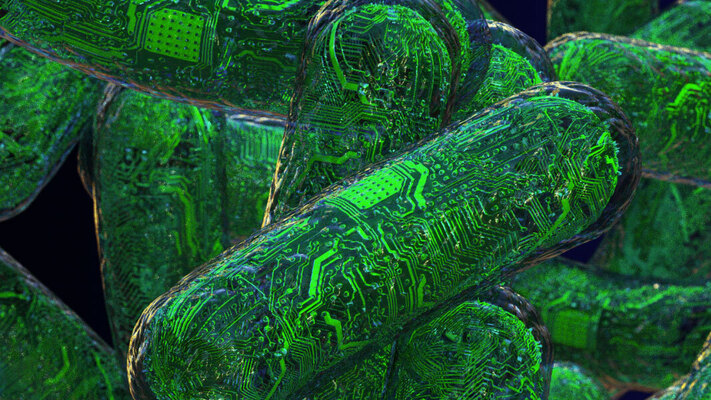

Путин заявил о важности развития нанотехнологий, отметив, что без этого у российской экономики нет будущего.
- Исследователи Университета Джона Хопкинса исследуют возможность «органоидного» интеллекта на базе специально выращенных клеток человеческого мозга.
- 
- Искусственный интеллект обычно ассоциируют с компьютерами, однако часть ученых ставят на биотехнологии. Исследователи Университета Джона Хопкинса во главе с профессором Томасом Хартунгом (Thomas Hartung) работают над так называемым органоидным интеллектом — системой, основу которой составят клетки мозга человека, выращенные в лабораторных условиях.
- Органоидами исследователи называют лабораторные скопления биологических клеток, с которыми эксперименты производятся уже много лет.
- Хартунг с 2012 г. успешно создает функциональные органоиды, используя клетки человеческой кожи. Их возможно «перепрограммировать» так, чтобы они вернулись в свое эмбриональное состояние, снова приобретая свойства стволовых клеток, а затем преобразовались уже в мозговую ткань с функциональными нейронами. Такие органоиды способны к обучению и запоминанию. Никаких этических проблем их использование не создает.
- По мнению Хартунга, со временем органоидные вычислительные системы превзойдут по своим возможностям любые другие искусственные системы.
- «Мы достигли той временной точки, когда технологии, позволяющие создать реально работающие биокомпьютеры, созрели, — заявил Хартунг в письме журналистам CNet. — «Идея состоит в том, что органоидный интеллект будет обладать некоторыми уникальными особенностями, присущими человеческому мозгу, такими, например, как быстрое принятие решений на основе неполной и противоречивой информации — т. е. интуитивным мышлением».